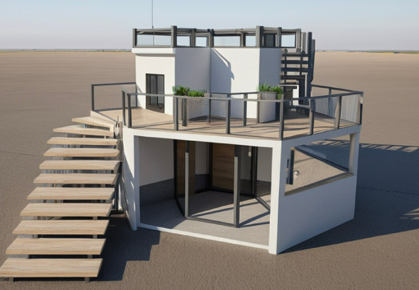
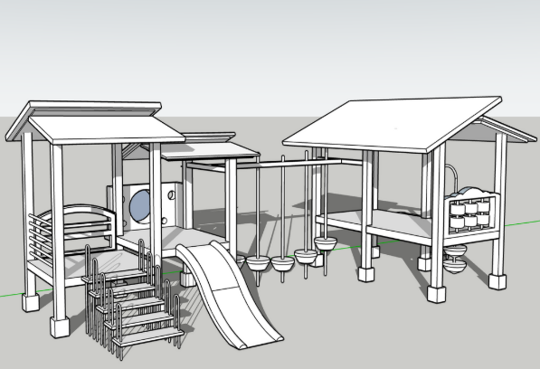
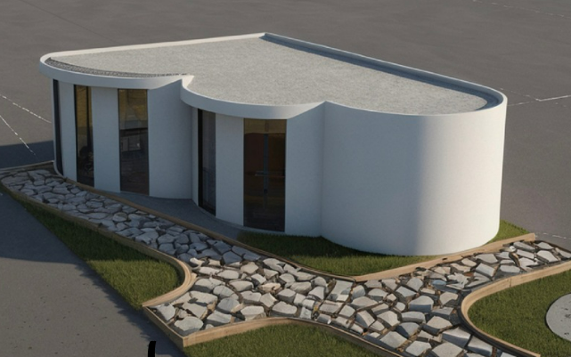

自主學習
SketchUp 空間實驗室 ✨

書店建模渲染

遊樂場模型

小屋與步道造景
光影模擬
💡 作品集分析筆記：
「從點到線，再到面的轉化」。在這些 SketchUp 習作中，我特別關注如何透過軟體的推拉工具，創造出符合人體工學且具備動態美感的居住單元。
「從點到線，再到面的轉化」。在這些 SketchUp 習作中，我特別關注如何透過軟體的推拉工具，創造出符合人體工學且具備動態美感的居住單元。